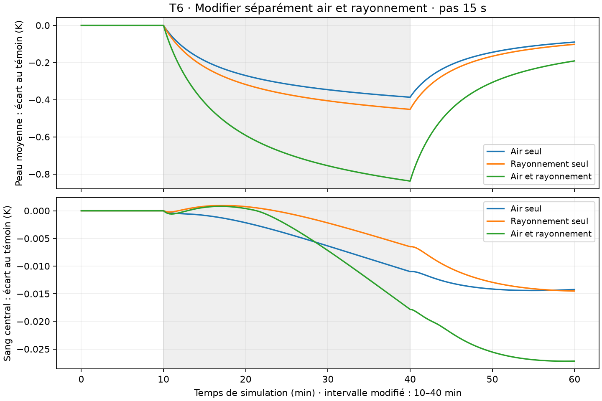

Expérience de modèle, sans validation expérimentale humaine. Même état initial T4, mêmes paramètres : seul l’air, seul le rayonnement ou les deux passent de 28 à 26 °C entre 600 s inclus et 2 400 s exclus. Aucun tissu n’est fixé à 26 °C.
Chargement…
Les températures sont celles de la fin du pas. Les entrées affichées sont celles appliquées pendant ce pas : au point 2 400 s, elles décrivent encore le dernier pas froid. Le retour à 28 °C commence au pas suivant.

Courbes au pas 15 s. Comparaison à des instants communs : le raffinement 60→30→15 s réduit les différences calculées. Bilan énergétique corrigé contrôlé, résidu maximal inférieur à 1,3×10⁻¹⁰ W. Ces vérifications ne démontrent pas la justesse des effets chez un humain. Sang central et température rectale mesurée restent distincts ; aucun raccord à l’avatar.
Télécharger les douze séries et leur planPréparer une nouvelle condition thermique — moteur local optionnel ; les séries reçues ci-dessus restent utilisables sans ce moteur.